The vCon Community
Developers, standards contributors, platform builders, and enterprise teams deploying or evaluating vCon. Join us for the October 13 pre-conference day and stay for the main conference.
Business runs on conversation. Every customer interaction, every agent call, every transaction begins with a voice or a message. AI has changed what happens next.
Fall '26 Voice and Conversations on the Net brings together the carriers, platforms, enterprises, and standards community defining the future of AI Communication.
Our focus is on the emergence of AI Communication, where intelligent systems do not simply respond. These systems remember, govern intent, and act responsibly.
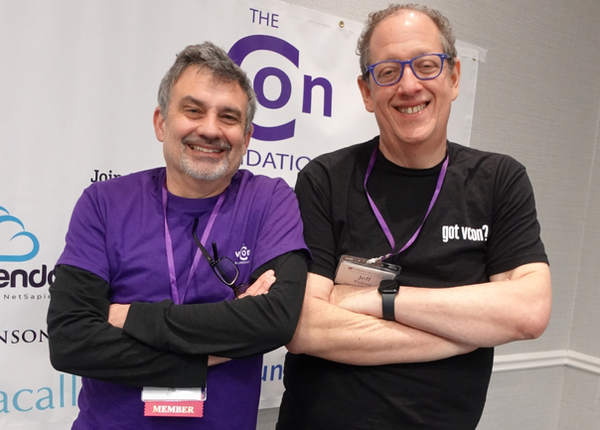
vCons are the robot food for AI.Thomas McCarthy-HoweCTO, vConic · co-author of the vCon Specification
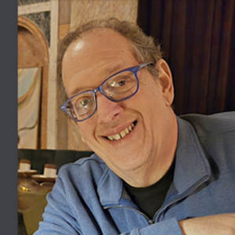
Curating events since 1996. It is one of my life’s passions: looking at what is happening in tech, and building conferences to explore the future.
From 1997 until 2008, Voice on the Net (“VON”) was the VoIP industry conference. More than 5,000 people twice a year in the US, with show floors that sold out in San Jose and Boston.
I never stopped. Fourteen events since 2023 alone. This is not our first rodeo.
In 2026 we keep it intimate. The community, the experience, helping people connect the dots, drive business, build and grow relationships.
I helped grow the VoIP industry. Along the way I started a number of organizations, including Vonage, Vivox and VON Coalition. I am the person behind the Pulver Order, the FCC ruling that kept internet voice unregulated.
We are living in the Renaissance of Voice. And you can't spell renaissance without AI.
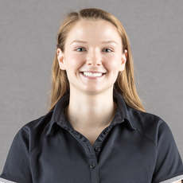
Audrey HaynMindMaking Chris FineIntegrative Technologies
Chris FineIntegrative Technologies Dag PeakAlianza
Dag PeakAlianza Derek CanejaVoiceRun
Derek CanejaVoiceRun Gerry ChristensenWireless Waypoint
Gerry ChristensenWireless Waypoint Hippolyte LapierreBoundaryAI
Hippolyte LapierreBoundaryAI Jeff PulverThe vCon Foundation
Jeff PulverThe vCon Foundation Ken AdamsP2P Labs
Ken AdamsP2P Labs Mark VangeAutom8ly
Mark VangeAutom8ly Matt FlorellVICIdial Group
Matt FlorellVICIdial Group Mike MillsGamma
Mike MillsGamma Randy LaymanAVOXI
Randy LaymanAVOXI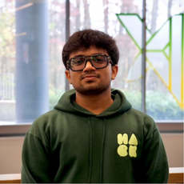
Sahil JagtapDrum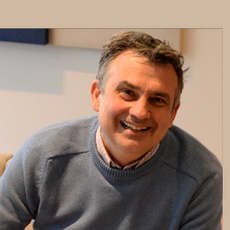
Thomas McCarthy-HowevConic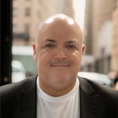
Vin MiccicheStrolidSwipe for more. See every speaker.
Early Bird ends August 28After that, prices go up.
Individual members attend at no cost. Corporate members can send up to five individuals. Members attend October 14 and 15 at a 50% discount.
Attend the 2026 vCon Summit and 2026 VoiceAI LIVE! at no cost.
Five individuals from your company on October 13, at no cost.
Half price on the two days of the main conference.
Members need a registration code. If you do not already have yours, email lauren@pulverstudios.com and Lauren will send it to you.
A C-level gathering of the people who set the direction and sign the deals. These groups do not otherwise gather together. Unbounded opportunities.
Developers, standards contributors, platform builders, and enterprise teams deploying or evaluating vCon. Join us for the October 13 pre-conference day and stay for the main conference.
The network underneath AI voice matters more than most people realize. Join the conversation on HD Voice, low-latency infrastructure, and the decisions that determine whether AI agents work at scale.
From agent orchestration to real-time synthesis, the builders of AI voice are defining a new industry. This is where that community finds partners.
Airlines, financial institutions, retailers, and healthcare systems are deploying AI agents in production. Hear from the people running those deployments, what works, what does not, and what is next.
The contact center is the front line of AI transformation. Fall '26 Voice and Conversations on the Net brings together the operations and technology leaders navigating that shift in real time.


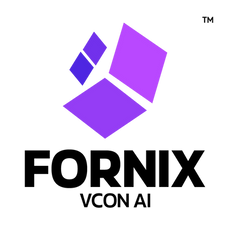

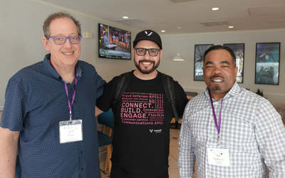
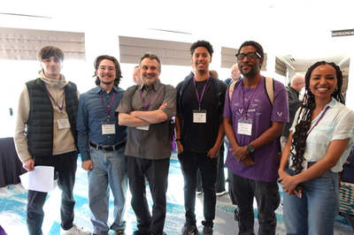
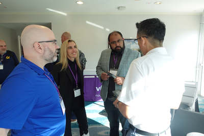
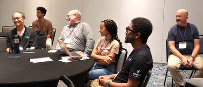
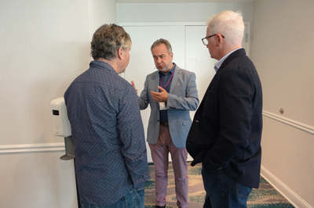
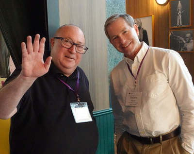
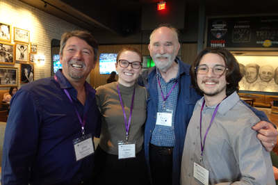
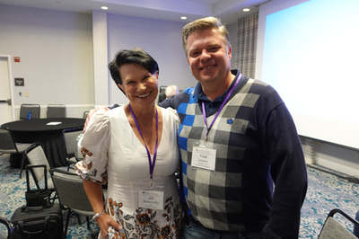
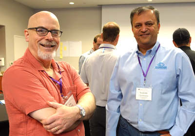
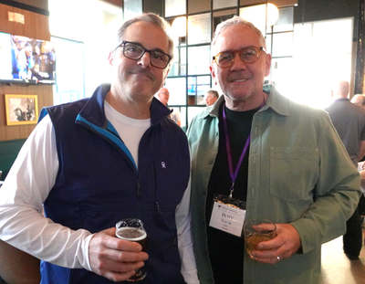
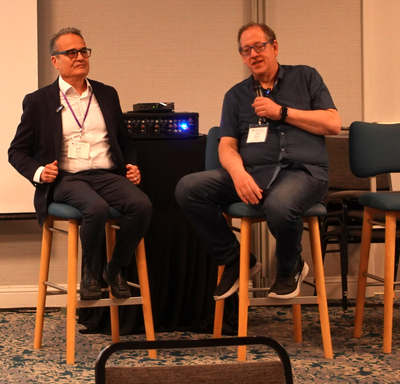
Program updates, speaker announcements and the full schedule when it goes live.
Jeff's Substack on what is happening in the world of vCons. Observations. Subscriber supported.
Over 5,000 subscribers.
October 13–15, 2026 · Atlanta
The AI Communication Industry Conference.
Early-bird pricing ends August 28. Save up to $475.
Why this room
Voice becomes memory.Messaging becomes action.vCons make conversations usable for AI.
Business runs on conversation. AI has changed what happens next. This is where the carriers, platforms, enterprises and standards people building that future get in one room.
What happens
The 2026 vCon Summit, a vCon Foundation event, and 2026 VoiceAI LIVE! One ticket covers both. Free for Foundation members.
Sessions across both days, a welcome reception on the 14th, and networking throughout.
Who is here


Who it is for
Not ready yet
Program updates, speaker announcements and the schedule when it goes live.
SubscribeA working conference for people who want to build and deploy, not just observe.
Get a ticket Sponsor